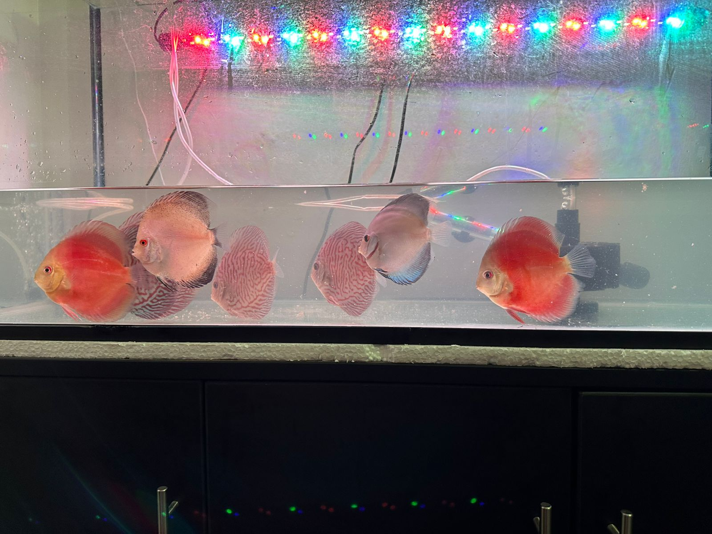

Discus Cobalto
El clásico tono azul cobalto, una adición impresionante a cualquier acuario.
ConsultarLos peces más majestuosos para tu acuario
El clásico tono azul cobalto, una adición impresionante a cualquier acuario.
Consultar